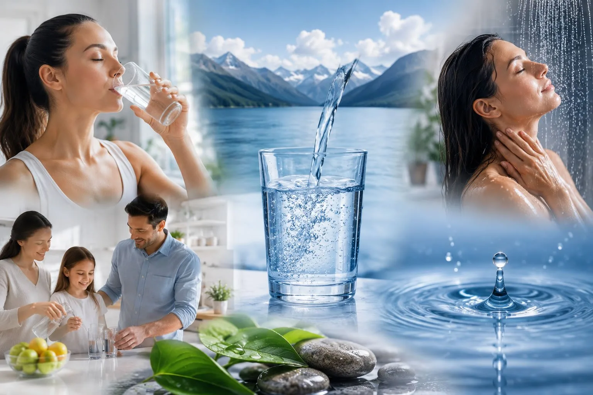

¿Cómo funciona?
PROCESOS DE PURIFICACION DE ULTIMA GENERACION para toda la casa

Sistema integral de purificación automática para toda la casa
Se instala en la linea principal de suministro de agua. Una vez que el agua ingresa al sistema, pasa por los múltiples procesos de purificación, luego sale y se dirige hacia la línea de utilización. Asimismo, el equipo dispone de un conducto conectado al drenaje para desviar el flujo hacia el desagüe cuando se ejecuta el retrolavado automático.
Múltiple Proceso
1- Transferencia de Masa de Alta Superficie
En este proceso con medio de ultra-alta porosidad cargada con un recubrimiento catalítico denso retiene los contaminantes más difíciles de eliminar. Esta ingeniería de materiales maximiza el área de contacto superficial, forzando a los contaminantes disueltos a interactuar de inmediato con el medio filtrante.
2- Cinética de Oxidación Heterogénea (Redox)
Al contacto, el catalizador rompe la barrera de energía de activación del fluido, provocando una reacción Redox instantánea. El hierro, el manganeso y el ácido sulfhídrico disueltos ceden electrones y se oxidan a una velocidad cientos de veces mayor que con cualquier método de aireación tradicional.
3- Transición de Fase y Co-Precipitación
Mediante este choque molecular, las partículas cambian de fase: pasan de un estado iónico soluble a estructuras cristalinas insolubles de alta densidad. Durante este reordenamiento ocurre un fenómeno de co-precipitación, donde estos cristales actúan como micro-imanes que secuestran y encapsulan otros metales pesados complejos como arsénico y plomo.
4- Refinado
Finalmente, la estructura molecular para otra función de catálisis pule el agua a una calidad de “Fresh Spring” de manantial del Himalaya.
5- Limpieza por Retrolavado
Cuando el material se satura, el flujo del agua se invierte de abajo hacia arriba. Esto expande la cama granular y libera fácilmente los contaminantes retenidos hacia el drenaje.
¿Querés mejorar la calidad de tu agua?
Solicitá asesoramiento sin costo y un asesor te contactará para evaluar tu caso.